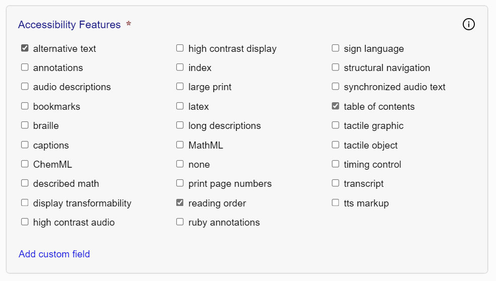

After completing the accessibility evaluation, the next step is to review the discovery metadata in the Discovery Metadata tab.
Each of the fields in this tab corresponds to a schema.org accessibility metadata property. The fields are
pre-populated, as much as possible, from information in the Ace JSON report.
There are seven discovery properties:
Accessibility Features
This field describes any features or affordances included in the publication that increase its
accessibility.

Additional features can be added by clicking the "Add custom field" link.
Identifies the nature of the content. For exmaple, visual is checked if there are images or video;
textual if there is text content; auditory if there is audio.
Identifies ways to access the full content of the publication. A publication may be consumed in a
number of ways, regardless of the default nature of the content. For example, a publication with
text and images will have a purely textual access mode if sufficient text equivalents and
descriptions are provided for all visual content.
If the publication did not contain discovery metadata, or if you made changes to what was found, click the
"Generate" button at the bottom of the tab to create a new set of metadata tags.
Note: Include discovery metadata even if the publication fails conformance testing.
It is a required component of the EPUB Accessibility specification.